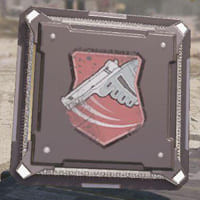
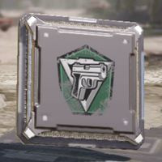
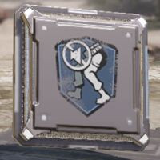

El besto Francotirador de COD Mobile
Les presento a nada mas y nada menos que a la mágnifica Locus
Tabla de Contenido
La Locus es un francotirador que posee un gran daño y además es locamente precisa. La locus tiene las caracteristicas necesarias para ser sin duda el mejor francotirador de todo Call Of Duty Mobile.
Estadisticas del Arma
Nota: Las siguientes estadísticas son con 0 accesorios equipados en el arma
| Daño | |
| Ratio | |
| Precisión | |
| Mobilidad | |
| Rango | |
| Control | |
| Tier |
Guia de accesorios
Esta es nuestra recomendacion para los accesorios de la Locus en Call Of Duty Mobile
- Cañón:YKM Lightweight Short.
- Culata:OWC Skeleton Stock.
- Laser:OWC Laser - Tactical.
- Munición:OWC Stopping Power Reload.
- Empuñadura:Stippled Grip Tape.
Estos accesorios para la Locus incrementan el daño, precisión, mobilidad y el control, y el rango; a cambio de bajar las estadisticas del ratio de fuego.
Aqui estan las estadisticas con los accesorios antes nombrados
| Daño | |
| Ratio | |
| Precisión | |
| Mobilidad | |
| Rango | |
| Control |
Otra configuracion para la Locus recomendada es la siguiente
- Cañón:YKM Lightweight Short
- Óptica:4x Tactical Scope
- Culata:OWC Skeleton Stock
- Munición:OWC Stopping Power Reload
- Empuñadura:Stippled Grip Tape
Con esta configuración hay 3 accesorios que mejoran la mobilidad: El cañón TKM, la culata OWC y la empuñadura Stippled; además, todos mejoran la velocidad de los disparos desde la cadera.
Los otros 2 aditamentos de este loadout son la mira 4x que es más que suficiente para volarle la cabeza a tus enemigos desde lejos y la munición OWC que incrementa el rango de daño, el daño en general y el tamaño del cargador.
Mejores ventajas para la Locus
Esta es nuestra recomendación para las ventajas con la Locus
|  | |
|  | |
|  |
Skins para la Locus
Las skins para las armas sirven para darle a tu arma una vista agradable a quien le heche un ojo. Acá hay algunas que se ven muy bien